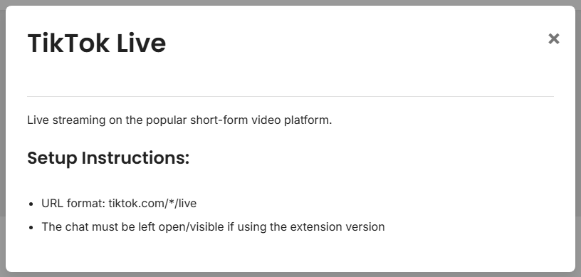

Connect a TikTok live chat, confirm messages in the dock, then add an overlay to OBS.
Use one session ID for the TikTok source, dock, and overlay URL.
YOUR_SESSION_ID

Use the live setup dialog to enter the account name and start the TikTok connection.

Open the dock with the same session ID. If chat appears there, the TikTok source is working.
https://socialstream.ninja/dock.html?session=YOUR_SESSION_ID
Add a Browser Source in OBS and use a template or featured overlay URL with the same session ID.
https://socialstream.ninja/featured.html?session=YOUR_SESSION_ID
For more setup modes and troubleshooting, see the full TikTok guide.